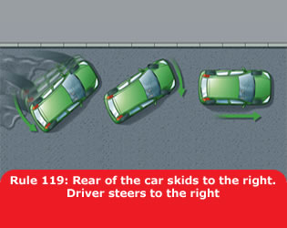
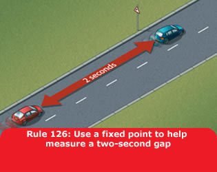

In normal circumstances. The safest way to brake is to do so early and lightly. Brake more firmly as you begin to stop. Ease the pressure off just before the vehicle comes to rest to avoid a jerky stop.
In an emergency. Brake immediately. Try to avoid braking so harshly that you lock your wheels. Locked wheels can lead to loss of control.
Skids. Skidding is usually caused by the driver braking, accelerating or steering too harshly or driving too fast for the road conditions. If skidding occurs, remove the cause by releasing the brake pedal fully or easing off the accelerator. Turn the steering wheel in the direction of the skid. For example, if the rear of the vehicle skids to the right, steer immediately to the right to recover.

ABS. If your vehicle is fitted with anti-lock brakes, you should follow the advice given in the vehicle handbook. However, in the case of an emergency, apply the footbrake firmly; do not release the pressure until the vehicle has slowed to the desired speed. The ABS should ensure that steering control will be retained, but do not assume that a vehicle with ABS will stop in a shorter distance.
Brakes affected by water. If you have driven through deep water your brakes may be less effective. Test them at the first safe opportunity by pushing gently on the brake pedal to make sure that they work. If they are not fully effective, gently apply light pressure while driving slowly. This will help to dry them out.
Coasting. This term describes a vehicle travelling in neutral or with the clutch pressed down. It can reduce driver control because
You MUST NOT leave a parked vehicle unattended with
the engine running or leave a vehicle engine running unnecessarily
while that vehicle is stationary on a public road. Generally, if the
vehicle is stationary and is likely to remain so for more than a
couple of minutes, you should apply the parking brake and switch off
the engine to reduce emissions and noise pollution. However it is
permissible to leave the engine running if the vehicle is stationary
in traffic or for diagnosing faults.
Law CUR regs 98 & 107
Speed Limits
| Type of vehicle | Built-up areas* | Single carriageways | Dual carriageways | Motorways |
| MPH (km/h) | MPH (km/h) | MPH (km/h) | MPH (km/h) | |
| Cars & motorcycles (including car derived vans up to 2 tonnes maximum laden weight) | 30 (48) | 60 (96) | 70 (112) | 70 (112) |
| Cars towing caravans or trailers (including car derived vans and motorcycles) | 30 (48) | 50 (80) | 60 (96) | 60 (96) |
| Buses, coaches and minibuses (not exceeding 12 metres in overall length | 30 (48) | 50 (80) | 60 (96) | 70 (112) |
| Goods vehicles (not exceeding 7.5 tonnes maximum laden weight) | 30 (48) | 50 (80) | 60 (96) | 70† (112) |
| Goods vehicles (exceeding 7.5 tonnes maximum laden weight) in England and Wales | 30 (48) | 50 (80) | 60 (96) | 60 (96) |
| Goods vehicles (exceeding 7.5 tonnes maximum laden weight) in Scotland | 30 (48) | 40 (64) | 50 (80) | 60 (96) |
*The 30 mph limit usually applies to all traffic on all roads with street lighting unless signs show otherwise. †60 mph (96 km/h) if articulated or towing a trailer
You MUST NOT exceed the maximum speed limits for
the road and for your vehicle (see the table above). The presence of
street lights generally means that there is a 30 mph (48 km/h) speed
limit unless otherwise specified.
Law RTRA sects 81, 86, 89 & sch 6 (as amended by the
MV(VSL)(E&W) regs 2014)
The speed limit is the absolute maximum and does not mean it is safe to drive at that speed irrespective of conditions. Driving at speeds too fast for the road and traffic conditions is dangerous. You should always reduce your speed when
Stopping Distances. Drive at a speed that will allow you to stop well within the distance you can see to be clear. You should
If you have to stop in a tunnel, leave at least a 5-metre gap between you and the vehicle in front.

See ‘Typical stopping distances’.